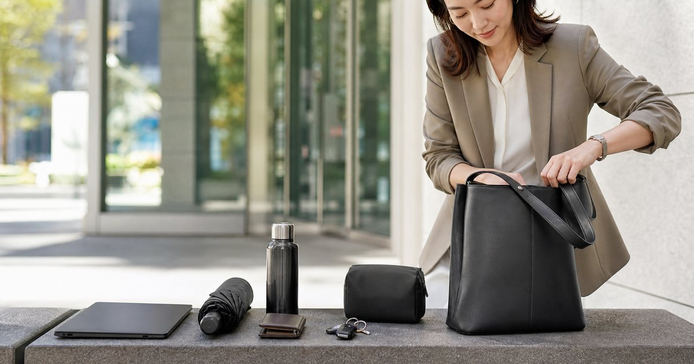

通勤包怎麼選：容量、重量、肩帶與正式感的 5 個判斷
一個好用的通勤包，不是最大也不是最時髦，而是能讓電腦、雨具、水瓶、補妝小物與文件各有位置。從容量、重量、肩帶到正式感，先用 5 個判斷避開買錯。

先看一天的移動路線，再看包型
通勤包的第一個問題不是好不好看，而是你一天會經過哪些場景：捷運、機車、開車、會議室、共享辦公室、健身房、晚餐約會。不同路線會決定你需要手提、肩背、斜背還是後背。
S′AIME 東京企劃適合處理較有城市穿搭感的肩背與斜背包；UD LAB 則適合快取、戶外城市感和輕量移動；Heine 海恩後背包可以放在需要電腦與文件的人選項裡。
如果你的日程常在辦公室、客戶會議和下班後的簡短聚會之間切換，包款最好不要只服務單一場景。能直立放置、拿取不費力、外觀不過度休閒，會比一眼驚豔但難整理的款式更耐用。
- 捷運與步行多：肩帶舒適和開口好拿最重要。
- 機車與雨天多：材質、防潑水與收納分區更重要。
- 會議多：包型要能進入正式空間，不只是週末好看。
容量不是越大越好，而是物品要有固定位置
很多人買通勤包時會先問能不能裝筆電，但真正影響每天使用的是分區。筆電、水瓶、雨傘、耳機、行動電源、鑰匙、口紅、證件與發票，如果全部混在一起，容量再大也會變成黑洞。
SPRING 包包、KANGOL 或 Mister 手作皮件這類配件型選項，可以補足不同正式度與小物收納。關鍵是讓高頻物品有外層或快取位置，低頻物品放內層，不要每次刷卡都翻出電源線。
- 每天拿 5 次以上的物品，應該放在最快拿的位置。
- 水瓶與雨傘最好獨立，不要和文件、電腦同層。
- 包內小袋比單純大容量更能維持秩序。
重量和肩帶，是通勤包最容易被忽略的成本
空包重量常常被低估。包本身若已經偏重，加上筆電、水瓶、行動電源與雨具，半天後肩頸就會開始抗議。通勤包不是短暫拍照用，它要承受的是每週五天的反覆使用。
肩帶寬度、軟硬、是否會滑、是否能調整，都比單一外觀更重要。UD LAB 這類偏機能包款適合重視快取與肩背穩定的人；S′AIME 則可用在比較重視穿搭完整度的日常。
- 空包先拿起來試重量，再想像加上筆電和水瓶。
- 肩帶太細不適合長時間背重物。
正式感來自輪廓、材質與五金，不只來自顏色
黑色包不一定正式，帆布包也不一定休閒。真正決定正式感的，是輪廓是否挺、材質是否乾淨、五金是否過度搶眼，以及包身是否因塞太滿而變形。
如果你常進會議室，可以選一個主包負責工作場景，再用小包或包中袋處理週末轉場。Mister 手作皮件這類皮革小物，適合作為皮夾、卡夾或禮品補充，不一定要讓整個包都很正式。
也可以把正式感拆成兩層：外層給別人看，內層給自己用。外觀保持乾淨克制，內部分區則可以更務實，這樣不必在漂亮與好用之間二選一。
- 挺版輪廓比軟塌包身更容易進正式空間。
- 通勤主包不必每天換，但包內模組要容易轉移。
雨天與冷氣房，是通勤包的真實壓力測試
台灣通勤很少只有晴天。包款若一碰雨就狼狽，或濕傘、薄外套沒有位置，就算平常好看也會在梅雨季失分。防潑水材質、拉鍊遮片、濕物袋和傘位，都是通勤包必看的細節。
若你已經有一個好看的主包，可以用 UD LAB 小包、KANGOL 配件或收納袋補足雨天與快取功能。不一定每個場景都靠同一個包解決，重點是分工。
- 濕傘和電子用品一定分層。
- 冷氣外套或披肩要有可壓縮位置。
選包前先做一次七日物品盤點
最可靠的買包方法，是先記錄一週真正帶出門的東西。很多想像中的需求其實很少發生；相反地，票卡、鑰匙、手機、行動電源、耳機和小傘每天都在用。
把七日清單寫完後，你會更清楚該買正式肩背、快取斜背、後背電腦包，還是只需要一個更好的包中袋。包款選擇不是表態，而是讓每天少一點摩擦。
盤點時也要把季節變數放進去：夏天的防曬、梅雨季的傘和冬天的薄圍巾，都會改變包內空間。真正耐用的通勤包，是能跟著你的週期微調，而不是只在某一天看起來剛好。
- 先記錄一週，再買下一個包。
- 如果每週只有一天帶筆電，就不一定需要每天背筆電包。
FAQ
通勤包要選肩背還是後背？
看移動距離與負重。如果每天帶筆電、步行時間長，後背包較穩；如果會議與穿搭正式度高，肩背或手提更容易進入辦公場景。
包款防潑水是不是就可以不用雨具？
不建議。防潑水只能應付短暫水滴，不能保證大雨或長時間淋濕。電子用品和文件仍建議獨立防水收納。
通勤包可以兼週末旅行嗎？
可以，但要確認容量、肩帶與分區能處理水瓶、傘、薄外套與行動電源。如果週末行程更偏戶外，另備輕量小包或後背包會更彈性。
下一步建議
如果你正在換通勤包，先用一週物品盤點確認容量與分區，再決定肩背、斜背或後背。
重要警語
本文為一般穿搭與選購情境整理，不構成醫療、安全或專業保管建議。包款、防曬、雨具與旅行用品仍需依你的交通方式、使用頻率、收納需求與商品頁規格評估；價格、活動與庫存請以商品頁公告為準。
本文含品牌／商品導購連結；若你透過部分商品連結前往選購，Elite Fashion 可能取得合作收益。本文仍以編輯判斷與使用情境整理為主，價格、規格、活動與庫存請以商品頁公告為準。